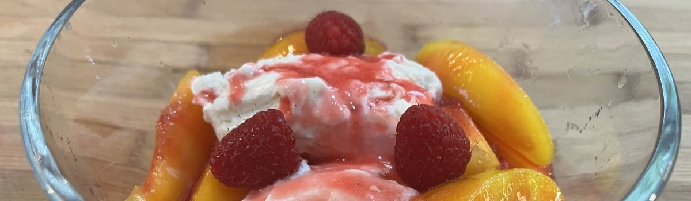
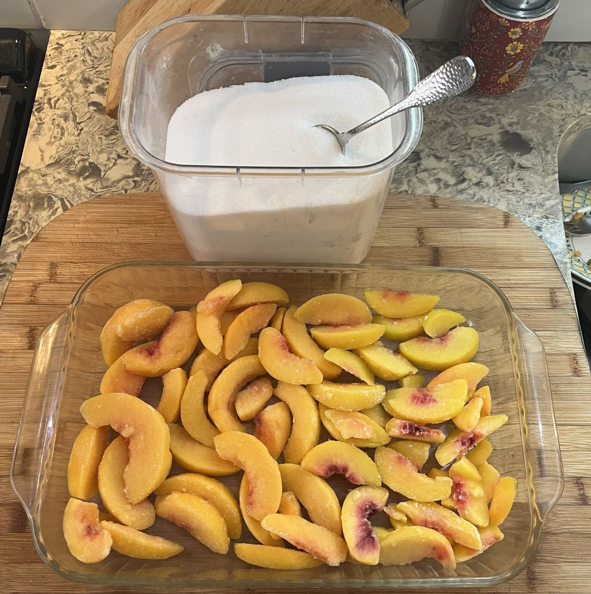
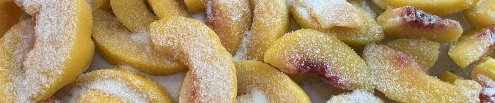
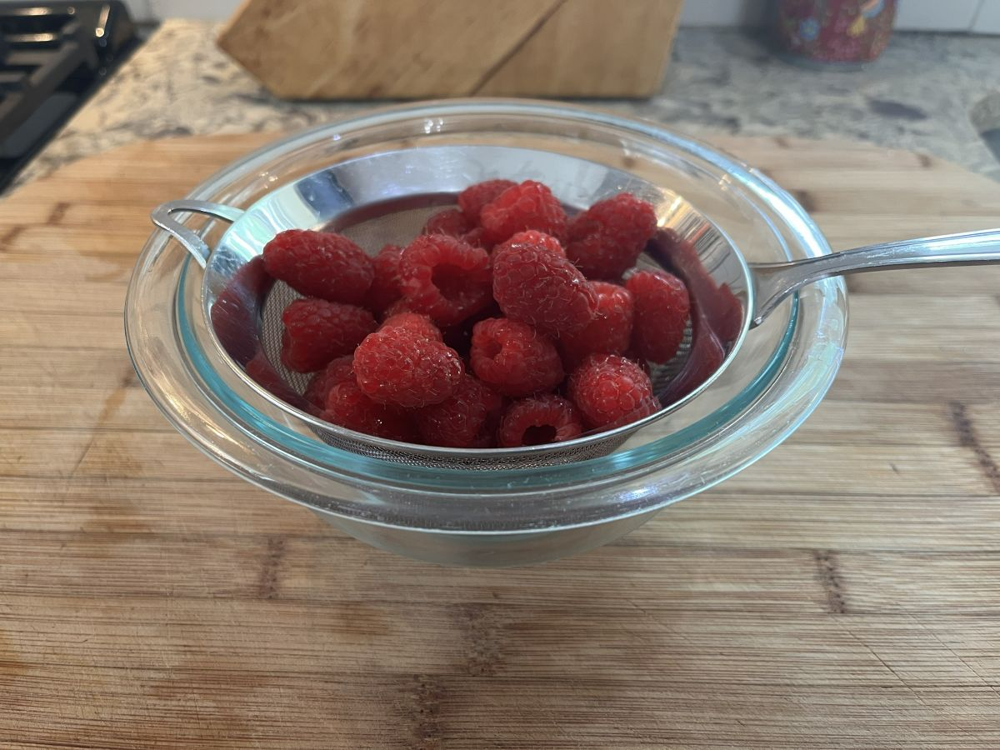
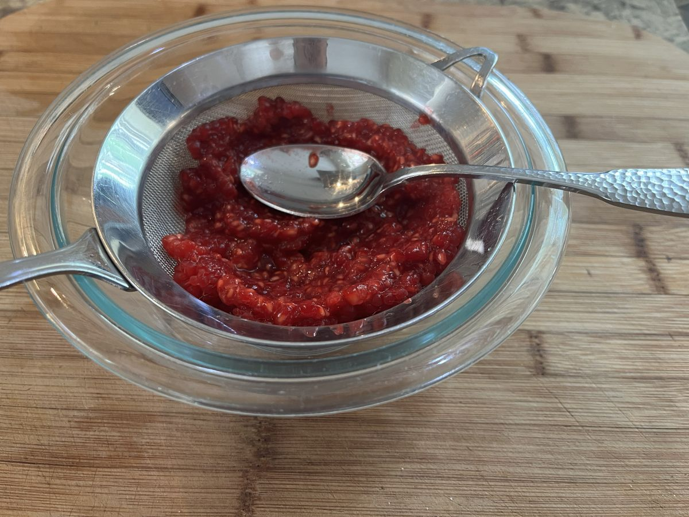
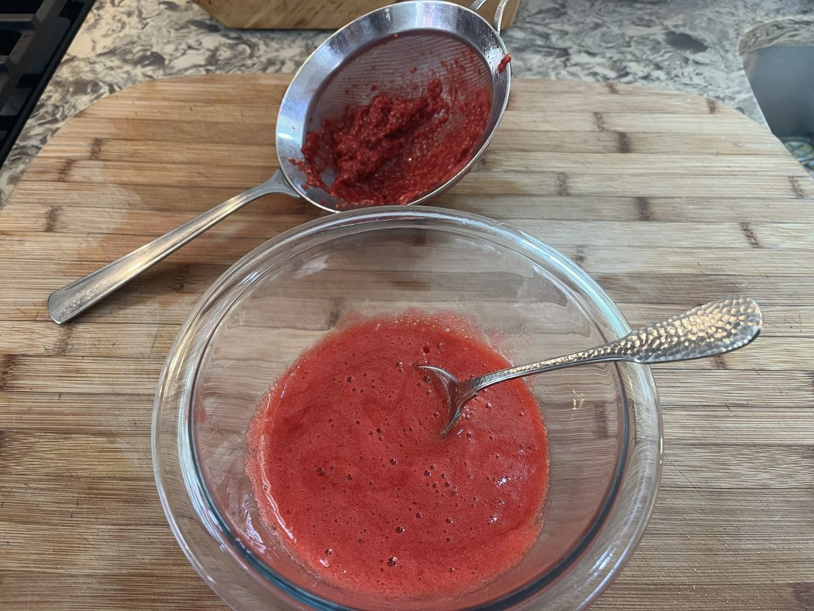
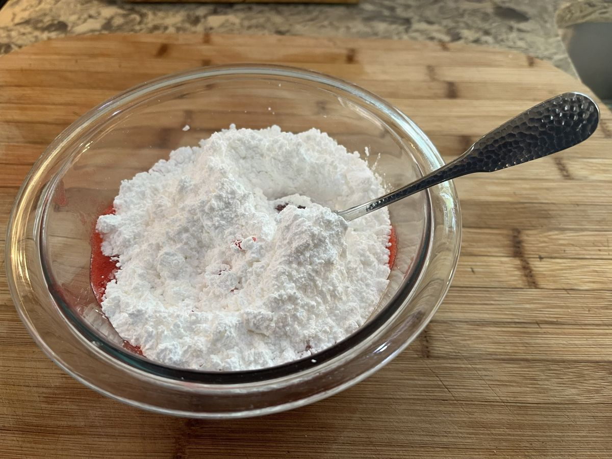
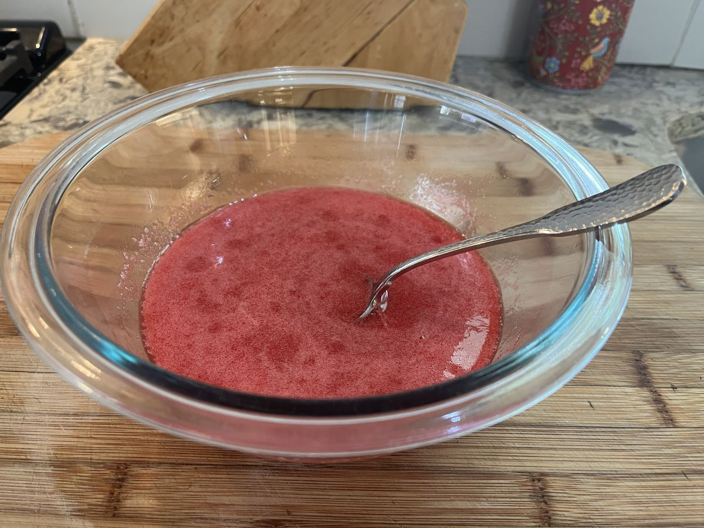

Let's kick things off with Escoffier's classic dessert pêche Melba!

April 12, 2026 - pêche Melba
First, a little about me. I am not a professional in the food industry or an academic food historian, just an enthusiastic amateur who likes thinking about, preparing, and eating good food. French cuisine is perhaps my area of greatest interest in this realm, but I am not highly specialized in that direction. I have been to France a few times and continue to work on learning to speak and write the French language. I've made a decent chunk of the dishes described in Julia Child's Mastering the Art of French Cooking, but I also like dabbling in Cajun, Mexican, Italian, American barbecue, and whatever else crosses my attention. At this point I feel I've learned enough foundational classic French technique that I can apply it as a flexible tool when adapting other dishes to my tastes and available ingredients. I suppose in some sense this approach has become foundational to modern fusion cuisine. I am personally not very hung up on "tradition" or "authenticity", seeing these things as more interesting but inessential aspects of cooking that should remain secondary to achieving enjoyable results.
The dish we are going to explore today is the dessert pêche Melba, created by one of history's most famous French chefs, Auguste Escoffier. The recipe we will be following comes from Esoffier's memoirs, as translated to English by one of his ancestors. Escoffier originally created the dessert for its namesake, Australian opera singer Nellie Melba. In earlier eras of history, chefs like Escoffier would have been serving royalty at elaborate banquets in their own homes, feeding them the spoils of colonial conquest. The nobility of Escoffier's world at the turn of the 19th century, however, increasingly traveled internationally and rubbed shoulders with the emerging capitalist class, artists, and intertaners at high-class hotel restaurants. It was at one such restaurant at the Carlton Hotel in London in where Escoffier first served this dish to Nellie Melba.
I find it interesting that Escoffier scolds the reader to keep this dish simple, denouncing variations such as use of whipped cream or red currant jelly. Skimming around the internet, it seems a lot of people ignore this admonishment, as there are ample recipes out there that call for poaching the peaches or that introduce wafers or whipped cream. I'm not inclined to be as judgemental about those choices as Monsieur Escoffier, but for the sake of satisfying my curiosity I've chosen to follow his instructions as faithfully as possible. I'm going to leave out his original decorations, at least, as a spun sugar casing and an ice sculpture of a swan would have to be their own, individual projects for me. Maybe next time.

Escoffier calls for fresh, ripe, peaches, with the Montreuil peach offered as an ideal option. Unfortunately, peaches are not in season here right now, so I decided to go with frozen peaches. The Montreuil peaches Escoffier preferred were likely grown in Paris, which also doesn't seem like a realistic thing for me to source. Besides peaches, the recipe calls for only vanilla ice cream, sugar, powdered sugar, and fresh raspberries. Escoffier's kitchen undoubtedly would have been making its own French pot ice cream, but I will be using locally made store bought. The vanilla ice cream I have seen in France has a lot more vanilla in it than even the high quality stuff found here, being almost grey in appearance, and that's what I would expect Escoffier's to have been like. Fresh raspberries are in season here, and fortunately I was able to get some nice ones. I have a suspicion that "powdered sugar" may have meant something slightly different than what's available now in the US, which typically contains corn starch, perhaps meaning what we now call "super fine", but I decided to roll with powedered sugar, regardless because of its sauce thickening qualities. Of these ingredients, the sugar and the vanilla bean are attributable to France's far flung colonial empire, whereas everything else is local to France.Preparation and assembly of the dessert is pretty simple, assuming you're not churning your own ice cream or carving ice swans. The peaches need to be briefly poached in boiling water, then briefly transferred to ice water to cool, so that they can be easily peeled. I got to skip this step because I was using frozen peaches. The peaches then are sliced, layed out, and sprinkled with a little bit of sugar. i left my frozen peaches out to thaw while I worked on the next steps, but with fresh peaches you would want to put them in the refrigerator. The sugar not only sweetens up the peaches, it helps soften them to more of a dessert-appropriate texture, plus helps the juices form into a bit of a syrup.

Next, the raspberries need to be pushed through a seive and mixed with an ample amount of powdered sugar. My initial thought was that I would cut back on the amount of sugar next time, as I thought Escoffier's ratio produced a result that was a little too powdered sugary-tasting, but after trying the completed dish it seemed to sit about right as it needed to hold up to the sweetness of the ice cream. Be warned that if you're new to this kind of cooking technique, pushing fruit through a fine sieve is tedious work that in Escoffier's commercial kitchen likely would have gone to someone pretty far down the ladder. After stirring in the powdered sugar I ran it all through the sieve again to make sure there weren't any lumps. Next time I might also add a few drops of freshly squeezed lemon juice, as I thought some additional tartness would be nice. It might be that Escoffier was working with more tart raspberries than I to begin with. The raspberry puree goes into the fridge and then that's pretty much it for preparation until it's time to assemble and serve.





Escoffier specifies "a silver timbale", which is a cylindrical serving dish and also not something I have, but otherwise the assembly is simple: a layer of vanilla ice cream, followed by the peaches, then drizzled with a generous amount of the raspberry sauce. The result is quite sweet, full of bright fruit flavors, and rounded out by the richness of the vanilla ice cream. My wife inhaled hers and asked if she could have another bowl instead of eating dinner. I would consider this experiment a success, and something I look forward to repeating this summer when fresh peaches are on hand. I agree with Escoffier that the combination is excellent as is, only needing to be elevated further via fresher, higher-quality ingredients.
Recipe: pêche Melba
Serves 4-8, depending on portions size.
Ingredients
- 6 ripe peaches (or an equivalent amount of frozen, about 6 cups worth of slices)
- 1/4 cup granulated sugar
- 2 cups ripe raspberries
- 1 cup powdered sugar
- 2-4 pints vanilla bean ice cream, preferrably French pot style
Instructions
- If using fresh peaches, dip them for a few seconds in boiling water then immediately remove using a slotted spoon to a bath of icewater. Peel the peaches, slice, and arrange in a large dish or pan. Sprinkle the granulated sugar over the peach slices and refrigerate.
- Place the raspberries in a fine kitchen sieve, mash up with a spoon, then push everything through the sieve, discarding the leftover pulp and seeds. Beat the powdered sugar into the raspberry puree, then run through the sieve again to produce a pure, uniform sauce. Set the sauce aside in the refrigerator until ready to serve.
- To assemble, place a scoop or two of ice cream in a bowl, layer peache slices in a circle around the perimeter, then drizzle a generous amount of the raspberry sauce over everything. If desired, garnish with a few whole raspberries. Serve immediately.